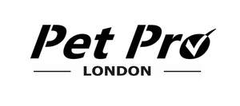

Trade Mark Journal No.2025/024 13 June 2025
UK00004209558 27 May 2025 (35)

- Class 35
- Business management of wholesale and retail outlets; Shop retail services connected with carpets; Retail store services in the field of clothing; Retail services in relation to furnishings; Mail order retail services for cosmetics; Retail services in relation to cookware; Mail order retail services for clothing accessories; Online retail services relating to jewelry; Online retail services relating to clothing; Retail services in relation to jewellery; Retail services in relation to pet products; Retail services in relation to smartphones; Online retail services relating to toys; Retail services relating to horticultural products; Retail services relating to clothing; Retail services in relation to hair products; Retail services relating to home textiles; Retail services in relation to floor coverings; Retail services in relation to bags; Retail services in relation to car accessories; Retail services in relation to clothing accessories; Retail services in relation to horticulture products; Retail services in relation to cutlery; Business merchandising display services; Retail service connected with the sale of power tools via a distributorship; Retail services in relation to toys; Retail services in relation to smartwatches; Retail services in relation to mobile phones; Retail services relating to sporting goods; Retail services relating to food; Retail services in relation to domestic electronic equipment; Retail services relating to furs; Retail services in relation to headgear; Providing online marketplaces for sellers of goods and or services; Retail services relating to automobile parts; Retail services in relation to gardening products; Retail services in relation to bicycle accessories; Retail services in relation to kitchen knives; Retail services in relation to wall coverings; Retail services in relation to lighting; Retail services in relation to luggage; Provision of an online marketplace for buyers and sellers of goods and services; Wholesale services for pharmaceutical, veterinary and sanitary preparations and medical supplies; Retail or wholesale services for pharmaceutical, veterinary and sanitary preparations and medical supplies; Retail services in relation to animal grooming preparations; Wholesale services in relation to animal grooming preparations; Marketing research in the fields of cosmetics, perfumery and beauty products; Maintaining a registry of dog breeds; Online retail services relating to handbags; Online marketing; Online advertising; Online retail store services relating to cosmetic and beauty products; On-line advertising and marketing services; Retail services in relation to footwear.
Wayne Angell
Tyrone Angell